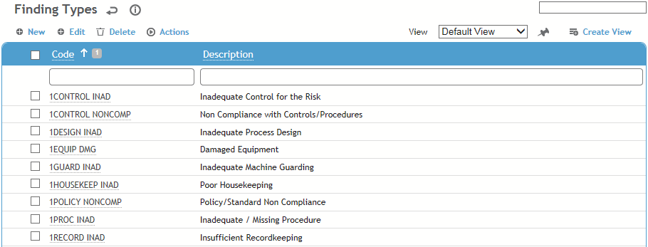
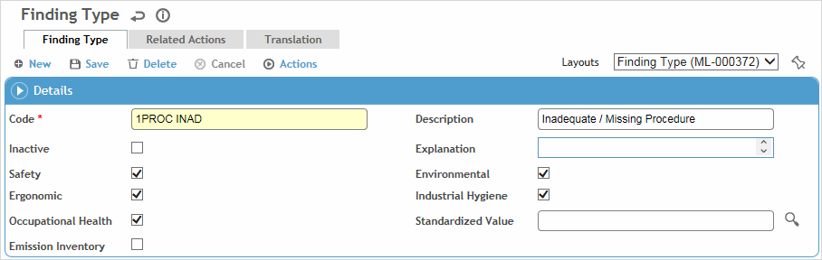

This table lists the type of finding/infraction (e.g. policy, recommendation, regulatory, as well as specific findings such as blocked doorways, etc.) along with any corrective actions that should be associated with it.
To filter the list of records, enter a few characters in one or more of the fields at the top followed by an asterisk, then press Enter.

Click a link to open a record, or click New to add a record.

Enter the Code, Description, and optionally an Explanation for the finding type.
To assign actions to the finding type, click New on the Related Actions tab and choose an action (from the PreventiveAction table). Actions that are linked to this finding type will be added to the Actions tab of the record when this finding type is added to the record.
If you have a large number of actions to relate to finding types, use the Import Utility; see Importing Text or XML Files into Cority Tables.
Identify which Cloud(s) the finding type is available in.
Optionally, select the Standardized Value (from the FindingTypeStandardizedValue look-up table) to categorize this record. This value will be used by the predictive Analytics module to compare your data to that of other organizations and determine your relative performance.
Click Save.